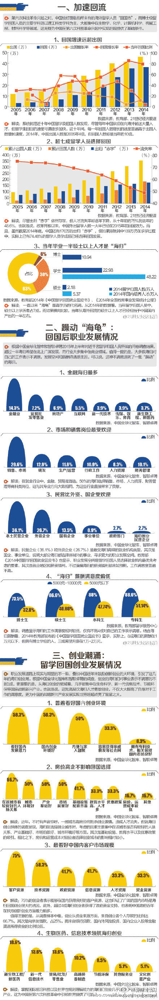

南美是天主教主导，同时也受社会主义（包括社会民主主义）影响很深；中东是伊斯兰教主导，同时也受社会主义影响深。在想是不是这里有点什么必然性？但转念一想，北欧是无神论主导，也受社会主义影响深啊。看来社会主义影响和宗教信仰的确是关系不大。
//@马少平THU:小编的数学水平语文水平都有问题 //@潘越_:似乎少了三个字“的一半” //@西瓜大丸子汤:应该是历史积累总和 //@潘越_: 没看懂原文得出"中国归国留学生人数首度超越出国留学人数"结论的逻辑，亦不清楚说的是本年度还是历史总和。//@西瓜大丸子汤:用脚投票@新财富杂志:【中国归国留学生人数首度超越出国留学人数】报告显示，截至2014年，中国留学回国累计人数达180.96万，占出国留学累计总人数51.4%。这是归国人数首度超出国留学人数。今天的海归创业来源越来越多元化，创业者遍布北欧、德国、法国乃至韩国，他们带来不同领域的技术和经验。 